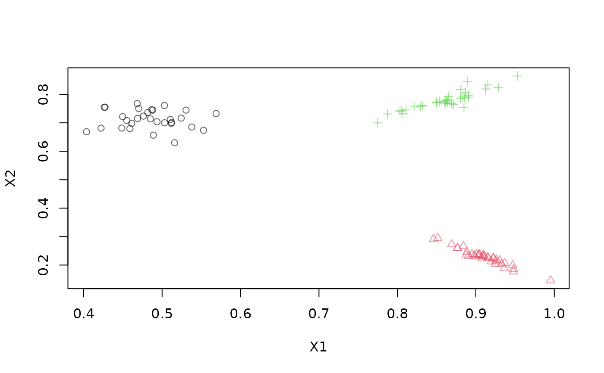

A DSD class that reads a data stream from an open DB result set from a relational database with using R's data base interface (DBI).
Usage
DSD_ReadDB(
result,
k = NA,
outofpoints = c("warn", "ignore", "stop"),
description = NULL
)
# S3 method for class 'DSD_ReadDB'
close_stream(dsd, disconnect = TRUE, ...)Arguments
- result
An open DBI result set.
- k
Number of true clusters, if known.
- outofpoints
Action taken if less than
ndata points are available. The default is to return the available data points with a warning. Other supported actions are:warn: return the available points (maybe an empty data.frame) with a warning.ignore: silently return the available points.stop: stop with an error.
- description
a character string describing the data.
- dsd
a stream.
- disconnect
logical; disconnect from the database?
- ...
further arguments.
Details
This class provides a streaming interface for result sets from a data base
with via DBI::DBI. You need to connect to the data base and submit a SQL
query using DBI::dbGetQuery() to obtain a result set. Make sure that your
query only includes the columns that should be included in the stream
(including class and outlier marking columns).
Closing and resetting the stream
Do not forget to clear the
result set and disconnect from the data base connection.
close_stream() clears the query result with DBI::dbClearResult()
and the disconnects from the database with DBI::dbDisconnect(). Disconnecting
can be prevented by calling close_stream() with disconnect = FALSE.
reset_stream() is not available for this type of stream.
Additional information
If additional information is available (e.g., class information), then the SQL
statement needs to make sure that the columns have the appropriate name starting with ..
See Examples section below.
See also
Other DSD:
DSD(),
DSD_BarsAndGaussians(),
DSD_Benchmark(),
DSD_Cubes(),
DSD_Gaussians(),
DSD_MG(),
DSD_Memory(),
DSD_Mixture(),
DSD_NULL(),
DSD_ReadStream(),
DSD_Target(),
DSD_UniformNoise(),
DSD_mlbenchData(),
DSD_mlbenchGenerator(),
DSF(),
animate_data(),
close_stream(),
get_points(),
plot.DSD(),
reset_stream()
Examples
### create a data base with a table with 3 Gaussians
library("DBI")
con <- dbConnect(RSQLite::SQLite(), ":memory:")
points <- get_points(DSD_Gaussians(k = 3, d = 2), n = 110)
head(points)
#> X1 X2 .class
#> 1 0.9530051 0.1735959 2
#> 2 0.9100267 0.2270289 2
#> 3 0.4676097 0.8388120 1
#> 4 0.8892304 0.2450237 2
#> 5 0.8500595 0.7727868 3
#> 6 0.5378217 0.6852378 1
dbWriteTable(con, "Gaussians", points)
### prepare a query result set. Make sure that the additional information
### column starts with .
res <- dbSendQuery(con, "SELECT X1, X2, `.class` AS '.class' FROM Gaussians")
res
#> <SQLiteResult>
#> SQL SELECT X1, X2, `.class` AS '.class' FROM Gaussians
#> ROWS Fetched: 0 [incomplete]
#> Changed: 0
### create a stream interface to the result set
stream <- DSD_ReadDB(res, k = 3)
stream
#> DB Query Stream (d = 2, k = 3)
#> Class: DSD_ReadDB, DSD_R, DSD
#> <SQLiteResult>
#> SQL SELECT X1, X2, `.class` AS '.class' FROM Gaussians
#> ROWS Fetched: 0 [incomplete]
#> Changed: 0
### get points
get_points(stream, n = 5)
#> X1 X2 .class
#> 1 0.9530051 0.1735959 2
#> 2 0.9100267 0.2270289 2
#> 3 0.4676097 0.8388120 1
#> 4 0.8892304 0.2450237 2
#> 5 0.8500595 0.7727868 3
plot(stream, n = 100)

### close stream clears the query and disconnects the database
close_stream(stream)